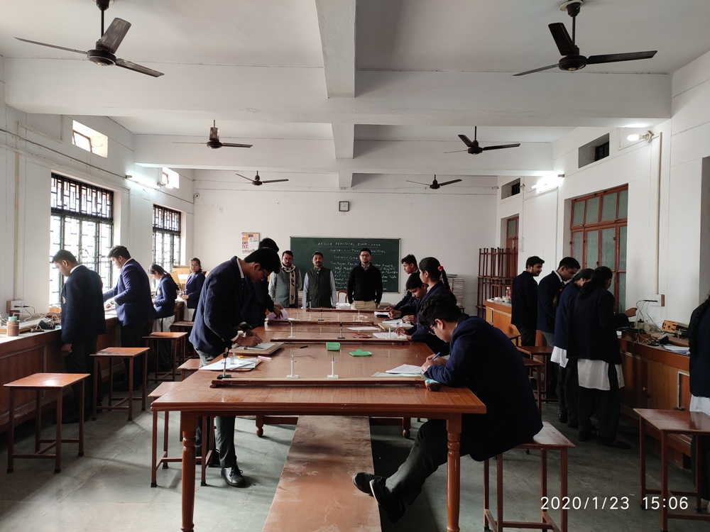
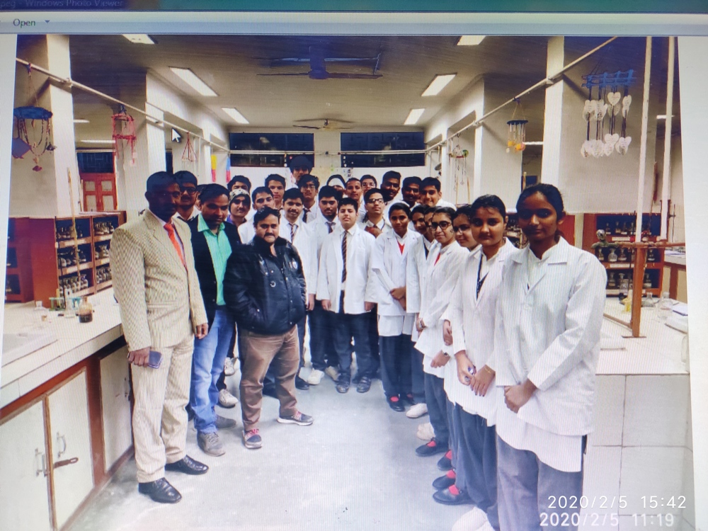

Insfrastucture
About Us > Infrastructure
St. Peter’s School has an excellent infrastructure to take care of every aspect of students’ personality development. The campus is huge. Dr. Kiran Bedi, IPS, who visited the school in 1999, commented that it has a campus bigger than any she had seen in India till that day. The campus has a total area of 30,351 square metres; it contains 65 classrooms, six laboratories, and 30 toilets separately for girls and boys. Additionally, our school also offers the following facilities:
Library

To meet the ever-increasing demand for knowledge, the school has constructed a spacious library where students feel comfortable while exploring a wide range of subjects.
Music Room
A serene space is provided in the form of a music room for students, which is equipped with various musical instruments, enabling students to develop proficiency in diverse genres of music.
Computer Lab
As the application of IT in the educational sector has created limitless opportunities for learning and growth through web-based technology, the school houses two computer labs to ensure that students keep abreast with the fast-changing IT world.
Physics Lab

The expansive and luminous physics laboratory serves as the preferred destination for aspiring scientists, fostering experimentation and the generation of novel insights.
Chemistry Lab

A well-equipped chemistry laboratory, equipped with test tubes and other common chemical apparatus, attracts many aspiring scientists who are engrossed in experimentation.
Biology Lab
The biology laboratory stands as a captivating corner of learning, where the most profound mysteries of life unfold. It is here that aspiring scientists witness the initial manifestations of life under the microscope, fostering a sense of wonder and awe.
Maths Lab
As promoted by the CBSE, a dedicated mathematics laboratory has been established within the school. This laboratory is equipped with a comprehensive collection of exhibits that demonstrate the engaging and enjoyable nature of mathematics.
Auditorium
An exceptional stage, inviting aspiring artists to showcase their talents in a well-defined auditorium, is available on the top floor of the new building. It is equipped with a state-of-the-art lighting and sound system and provides an immersive experience for cultural enthusiasts.
Multi-Purpose Hall
The multi-purpose hall serves as a spacious venue for conducting a diverse range of educational activities.
Playground
Our expansive ground provides a secure outdoor environment within the school, encouraging children to channel their creative energy into physical well-being.